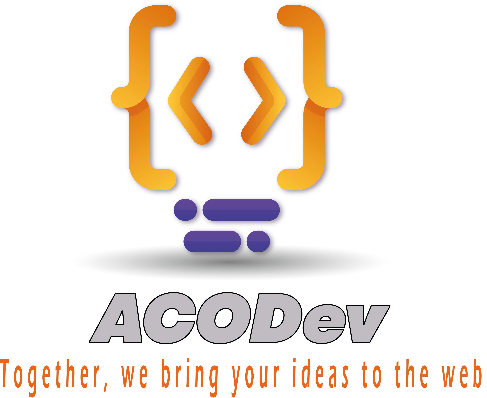

Bienvenidos a ACODev
¿Quiénes somos?
Acodev es una marca de desarrollo y diseño web comprometida con la creación de soluciones innovadoras y creativas para cada uno de sus clientes. Nuestro equipo de expertos en tecnología y diseño está dedicado a brindar un servicio excepcional a través de una sólida ética de trabajo y valores fundamentales. En Acodev, creemos en la importancia de escuchar y comprender las necesidades únicas de cada uno de nuestros clientes, y trabajamos en estrecha colaboración con ellos para desarrollar soluciones personalizadas adaptadas a sus requisitos específicos. Nos enorgullecemos de ofrecer un enfoque colaborativo y transparente para cada proyecto, trabajando de la mano con nuestros clientes para garantizar que se satisfagan sus necesidades en cada etapa del proceso. Como marca, Acodev es conocida por su enfoque en la calidad, la excelencia y la atención al detalle. Nos esforzamos por entregar resultados impecables y superar las expectativas de nuestros clientes, siempre dentro de los plazos y presupuestos acordados. Estamos orgullosos de representar valores de honestidad, integridad y profesionalismo en todo lo que hacemos, lo que nos permite construir relaciones duraderas y mutuamente beneficiosas con nuestros clientes. En resumen, Acodev es una marca que representa la excelencia en el diseño y desarrollo web, comprometida con la calidad, la innovación y la satisfacción del cliente. Si buscas una solución de desarrollo web personalizada y eficiente, Acodev es tu mejor opción..
Nuestros servicios
En Acodev ofrecemos servicios de diseño y desarrollo web personalizados, adaptados a las necesidades específicas de cada cliente. Nuestro equipo de expertos en tecnología y diseño trabaja con la más alta calidad y profesionalismo para lograr resultados excepcionales. Utilizamos las últimas tecnologías y tendencias en diseño web, incluyendo HTML, CSS, JavaScript y WordPress, para crear sitios web que sean atractivos, intuitivos y eficientes. Además, nos aseguramos de que cada sitio web que creamos sea completamente adaptable a todos los dispositivos y navegadores, para que sus clientes puedan acceder a su sitio web desde cualquier lugar y en cualquier momento. Nos enorgullece ofrecer un servicio al cliente excepcional, enfocado en la transparencia y la colaboración en todo momento del proceso. Nos aseguramos de mantener una comunicación abierta y constante con nuestros clientes, para garantizar que sus necesidades sean satisfechas en cada paso del proyecto. En Acodev, también ofrecemos servicios de mantenimiento y actualización web para que sus sitios web siempre estén actualizados y funcionando sin problemas. Si está buscando un servicio de diseño y desarrollo web personalizado, eficiente y de calidad, no dude en ponerse en contacto con nosotros. :
- Diseño de páginas web
- Asistencia virtual
- Manejo de datos
- Desarrollo de software a medida
- Marketing digital
Contáctanos
Estamos siempre dispuestos a ayudarte. Puedes contactarnos a través de cualquiera de estas vías: